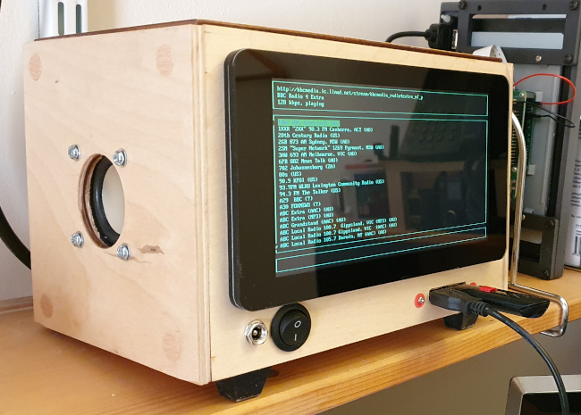
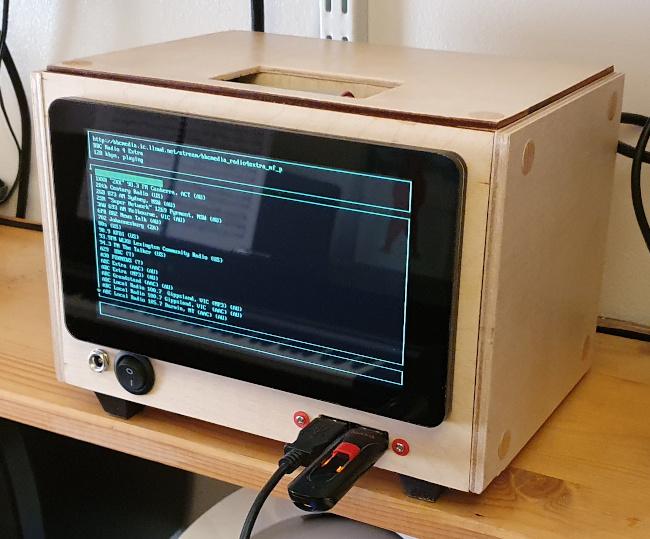
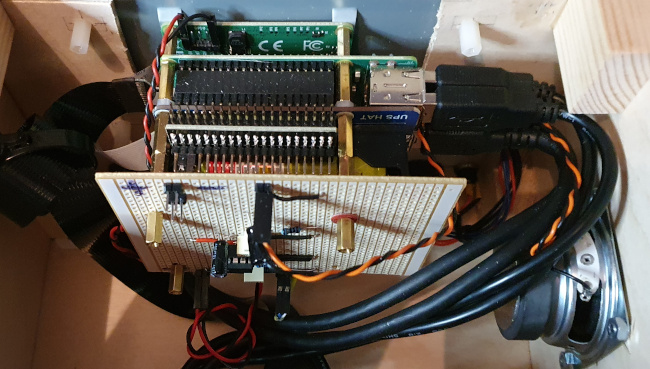
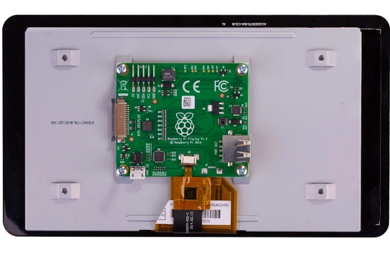
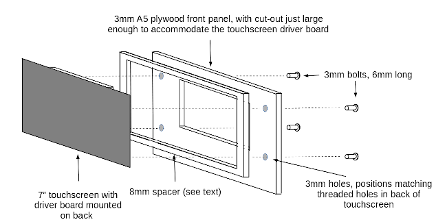
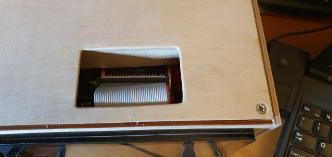
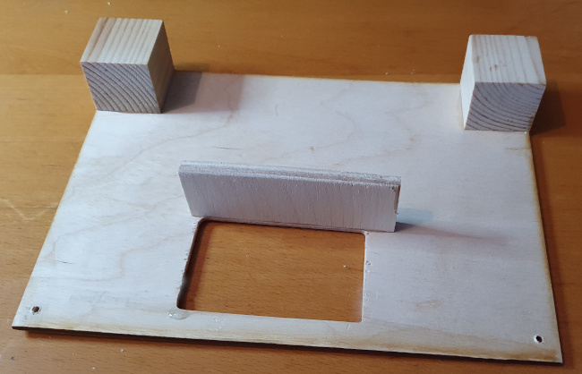

A Raspberry Pi and touchscreen case that anybody can make
 I've been looking for a long time for a commercial Raspberry Pi case that is large enough to accommodate a 7" touchscreen, has an audio amplifier and speaker, and provides access to the GPIO header. Ideally it would be battery powered, not just for supply independence, but for reliability reasons that I'll discuss later.
To the best of my knowledge, no such product is made. In fact, no similar product exists, so I've had to make my own.
In this article I outline the construction of the case shown in the photo below, which is made mostly from pre-cut wooden parts and needs only hand tools to build and assemble. I think that the wooden construction looks reasonably pleasant, but I'm using it for ease of construction, rather than for its aesthetics. I'm not giving detailed plans, because I assume that anybody who would be interested in something like this would have specific requirements. I do describe the fiddly bits in the construction, however, in the hope that these details will save other people a bit of time.

Design goals
1. The unit can be constructed using only simple hand tools, requiring no great accuracy, by a person with modest construction skills. So far as possible, the case is made entirely of pre-cut plywood panels of A5 size (by good fortune, A5 is just large enough to fit the official Pi 7" touchscreen, and a number of ports and switches).
2. The design uses only parts that are widely available, from on-line retailers (since "inessential" shopping is currently forbidden in much of the World).
3. The unit will be self-contained, with its own touchscreen and loudspeaker, and powered by rechargeable batteries.
4. There will be easy access to the GPIO header, without the need for tools or dismantling.
5. It will be possible to exchange SD cards, without dismantling and without tools.
6. It must be possible to dismantle the unit completely using only a screwdriver.
Prototyping
I prototyped the case in Foamex, using the method described in this article. I was therefore reasonably sure that all the parts would fit. It's possible to get Foamex board in 3mm and 6mm thickness to match the plywood I used in the final design. However, 3mm Foamex is too flimsy to make a working prototype, so I would suggest using 6mm and making allowances for the slightly reduced space in the final design.Parts and components
The most specialist component used in this design is the Pi UPS HAT with 8.4V power supply. This is useful for reasons other than providing a battery backup, as I'll discuss later.
You'll also need the following, if you follow my design closely (and, of course, there's no particular reason to).
Wood for the case. My design uses pre-cut plywood pieces of A5 size, which are widely available. If you have a table saw or fine-tooth circular saw you can buy sheet wood and make the case any size you like. However, my design intentionally calls for no accurate or elegant cutting. I used 3mm birch plywood for the front, back, top, and bottom, and 6mm birch plywood for the sides. Using thicker wood for the sides improves the sound quality from the loudspeaker. If you aren't including the loudspeaker, there's no advantage to using thicker wood. If you don't have professional woodworking tools available, using 3mm wood for the front panel is essential -- there's too much cutting on this front panel to use thicker wood.
Wood glue for assembling the case. I used two-part quick-setting epoxy.
Varnish, paint, or wood stain to suit your taste.
A length of 1" x 1" planed timber (or similar) cut into (approximately) 1" cubes. These will be the corner pieces of the case -- all the wooden case panels will be screwed to these corner pieces.
Small screws for screwing the case together -- 3/4" size 8 or similar, but the size isn't critical.
A small loudspeaker (if you're including the audio amplifier). It won't need to be able to handle more than a couple of watts, because any more than that will strain the power supply. You'll also need speaker-mounting hardware (e.g. 3mm nuts and bolts).
Parts for the audio amplifier, if you're using one. You can buy a ready-made mono amplifier module like this one, or design and build your own. I'll discuss the audio amplifier in more detail later.
An official 7" touch-screen, available from many vendors. Because it's so widely available, it's worth shopping around to find one that is on special-offer -- I can usually get them for around £30, at the cost of a bit of web searching.
If you want to retain access to the Pi's GPIO using an opening in the top of the case, you'll need a GPIO right-angle adapter. In my design, the GPIO pins are pointing towards the back of the case -- but they're nowhere near close enough to the back of the case to be able to access them. The right-angle adapter allows the GPIO pins to point upwards, making them easy to access through a slot in the top of the case.
Several USB panel-mounted extensions, like this one. These are also available with circular bezels, for which the panel cut-out can be made just with a large drill bit or hole cutter. The rectangular ones need some cutting and filing, unless you have a laser cutter handy. Both single and double outlets are available. I used two singles on the front panel, because the double was hard to fit between the screen bezel and the bottom of the case. I used a double on the back, just to reduce the amount of panel cutting.
If you want to bring the HDMI signal out to a socket, you'll need a panel-mounted HDMI extender. You'll probably also need an HDMI right-angle adapter, because the HDMI cable won't fit between the Pi and the bottom of the case if leaves the Pi heading downwards. Using the right-angle adapter allows the HDMI cable to leave the Pi heading backwards. You could also expose the Ethernet socket using a panel-mounted extender, but all the products I've seen for sale have a right-angle connection at the plug (Pi) end. This means that the plug fouls the USB ports on the Pi, limiting the number that can be used.
If you want to bring out the headphone socket, you'll need the parts for this. I haven't been able to find a ready-made extender, so you'll need to solder one up yourself using a 3.5mm plug, 3.5mm socket, and a short length of screened cable. My design uses a loudspeaker, and does not expose the headphone output, which feeds the speaker amplifier directly.
A panel-mounted socket and corresponding plug for the power supply connection. I used 6.3mm sockets because they have low contact resistance and a positive engagement.
3.5mm plug for connecting the audio amplifier (if used) to the Pi's headphone output.
About six inches of screened cable for connecting the heaphone output to the amplifier.
If you're including an audio amplifier, you'll need to some method for connecting the power supply, audio amplifier, and speaker. If you're using stripboard or a PCB, header plugs and sockets are ideal -- and you'll probably have the parts if you're used to connecting to the Pi GPIO.
A panel-mounted main switch, which should be rated for at least 3 amps DC. A substantial switch is better, because it will have a lower contact resistance than a cheap, flimsy one, even with the same nominal current rating. A low contact resistance is very important in this design.
A few feet of hook-up wire, ideally in different colours. For those parts of the wiring that carry significant current, you can double-up or triple-up the conductors to reduce the resistance, where high currents are involved.
2.5mm stand-offs, for assembling the sandwich of HATs that make up the system. It's probably most cost-effective to buy these in a set of mixes sizes, like this one.
3mm bolts of various lengths, with washer, the panel fittings and mounting the touchscreen. These can be metal or plastic.
Feet for the case. I used simple stick-on rubber feet.
Self-adhesive screw covers, to conceal the ugly screw heads. Of course, you could use some other method to do this.
A fine-bladed saw of some kind. Only two cuts in the wood of the main case are required, and they can be placed at the back where they aren't very visible. So great precision is not required. I made the rectangular panel cut-outs by sawing the rough shape, then finishing using sandpaper and a file.
A (probably electric) drill, with 1mm and 3mm bits for general use, plus whatever bits are needed to drill holes for the circular panel-mounting components. A countersink bit helps with setting the case screws below the wood surface. A hole-cutting attachment makes quick work for drilling the large panel hole for the loudspeaker -- but you cut cut-and-file this instead, if you have the patience.
Various screwdrivers.
A soldering iron, especially if you're building your own audio amplifier. You might not need to solder to the panel-mounted parts, if you buy parts with screw or crimp connectors.
Wire stripper and/or side cutters.
Tools
Building and assembling the case requires only "garden shed" tools. If you're building or integrating an audio amplifier, you'll need basic electronic tools as well.
Assembling the electronic parts
I'll describe the individual electronic components below -- this section is just about the overall design and layout.
In this design, the entire electronic installation consists of "HATs", piggy-backed onto the back of the touchscreen. You can see the complete stack in the below, although the details are not entirely visible because of the lighting.

From top to bottom (that's front to back in the case) we have:
the touchscreen (only part of the grey metal body can be seen through the cut-out in the front panel);
the touchscreen driver board. You might just be able to see the 5V connections to the driver at the top left of the photo. The other ends of these 5V connections are to GPIO pins;
the Pi board (mostly invisible, because it's hidden under its own GPIO header). The USB extension cables are visible to the right of the Pi board -- two of these go to the front panel, and two to the rear (although this is flexible, of course);
GPIO right-angle adapter, for providing access to the GPIO header from a hatch in the top of the case;
home-made audio amplifier board. I made this on a piece of strip-board, drilled so that it would attach to the battery HAT.
The audio amplifier board is connected to the small loudspeaker, a 5V supply from the battery HAT (that's the red/black twisted pair at the bottom of the amplifier board), and the Pi headphone output (using a very short screened cable, which is not highly visible). The unused header pins at the top of the amplifier are for connecting a 5V case fan, should one prove necessary. For a Raspberry Pi 4, a small fan is probably necessary. For a Pi 3, probably not.
Note that there's just enough space to the right of the Pi board to accommodate the USB extension cables. The loudspeaker needs to be mounted vertically on its panel in such a position that it doesn't foul these cables. I placed the speaker centrally, and there's just enough space.
Making the front panel and mounting the touchscreen
This is by far the most fiddly part of the construction, because the official Pi 7" touchscreen really isn't built to be panel-mounted. Its only mounting points are four threaded holes on the back of the metal part of the screen (see photo below).

If we mount the metal part of the touchscreen on the front panel, the delicate glass part will stand proud of the panel by about 8mm, which is both fragile and unsightly. We must either provide some sort of spacer between the glass part of the screen and the panel, or find a way to set the screen back in the panel, so its glass part is flush with the panel.
The latter approach would probably be the more aesthetically satisfying, but is very difficult to implement with a wooden panel. You'd have to cut a very precise hole in the panel, so that the metal part of the touchscreen could just pass through it. Then you'd have to construct some arrangement of brackets to fasten the screen using the threaded holes, which will now be either below or above the rear surface of the front panel (depending on how thick the panel is). This is a non-trivial operation using only hand tools.
The first approach -- the one I've adopted -- is to put a spacer between the touchscreen glass, and the front panel. The spacer needs to be 8mm thick, and thin enough to fit between the metallic part of the touchscreen and the glass.
Of course, if you had the tools and materials to construct such a spacer from raw materials, you probably wouldn't be reading this. However, suitable spacers are already available, and not very expensive. What I did was obtain a cheap Pi desktop stand like the Pibow touchscreen frame, and throw away the leg parts. This leaves a spacer of exactly the right size and shape.
I mounted the touchscreen on the front panel as in the diagram below:

Note that the method of cutting the hole in the front panel is non-critical -- it won't be visible. It must be large enough to allow the driver board of the touchscreen to pass through. If it's large enough to allow the Pi and the complete HAT stack to pass through, that's even better -- you'll be able to remove the entire functional part of the system through the front of the case. This certainly makes maintenance easier. However, if you make the cut-out too large, the front panel will be flimsy.
Although the panel cut-out need not be elegant, the position of the cut-out needs some careful thought. The touchscreen needs to be mounted in the front panel in such a way as to allow space for the front panel ports and controls. There needs to be room between the Pi and the case sides for access to the USB ports. Moreover, because the Pi will be mounted directly on the back of the touchscreen, placing the touchscreen higher on the front panel has the effect of placing the Pi GPIO header closer to the top of the case. Since this is the way I plan to get access to the GPIO, it makes sense to place the touchscreen as high on the front panel as practicable, but not so high that it looks peculiar. I found that, with an A5-size front panel, placing the touchscreen so that it was about 8mm from the top, left, and right, worked reasonably well. This puts the GPIO header about 40mm below the top of the case, which is reasonably accessible.
Even using a pre-fabricated touchscreen spacer, assembly of touchscreen in the front panel is fiddly. The touchscreen is fastened to the front panel using four 3mm bolts that pass through holes drilled in the panel. These holes must be placed very exactly, and there's no way to do this except by careful measuring of the positions of the threaded holes in the back of the touchscreen. If you drill the panel holes over-sized, then the touchscreen will be easier to mount -- but it will be a sloppy fit.
The length of the 3mm bolts is also rather sensitive. If they're too short, they won't grip the touchscreen properly. But if they're too long, you won't be able to tighten then enough, without screwing them into the back of the touchscreen and breaking it. I find that, with a 3mm panel, bolts of 6mm length are about right. You might need to cut some bolts to this length, if the exact length isn't available. Plastic bolts are both easier to cut, and less likely to damage the touchscreen if you screw them in too far.
With the touchscreen positioned -- and then removed for safekeeping -- we can drill or cut the rest of the front panel controls. I've placed the main switch, power supply socket, and a couple of USB connections on the front panel. This makes the front panel and the components mounted on it a completely self-contained computer. However, it might be more aesthetic to put the power-supply connection on the back panel -- at the expense of making dismantling for maintenance more fiddly.
The USB sockets can be mounted either behind or in front of the panel -- the only difference is the size of the cut-out required. There isn't really a lot to pick between the two approaches.
Battery power supply
The battery power supply for this unit is a proprietary HAT device powered by two 18650 batteries. In my tests, this unit will power the system for between one and six hours, depending on load, display brightness, audio volume, etc. The HAT powers the Pi directly through its GPIO pins, so the current path is short. Using a battery supply has a significant advantage apart from the obvious one of making it possible to run the unit whilst away from a mains supply. It needs a bit of thought to appreciate why this is so.
The battery power supply is rated for a continuous current of 3 amps, and the unit does draw this much current under full load, with the touchscreen backlight on maximum brightness, and audio playing at full volume. With this current, there can be significant voltage drops along the power supply cabling, particular with a low power supply voltage like 5V. The battery voltage is considerably higher than the Pi's 5V supply voltage -- 8.3V in the supply I'm using. Connecting the 5V power output from the PSU directly to the Pi's GPIO pins reduces the electrical resistance of the supply path, compared to using a cable connection connection. In addition, the voltage regular in the PSU will continue to deliver 5V from the 8.3V battery, even if there is a significant current drain.
These factors together mean that, even though the electronic parts between them can draw up to 3 amps, the Pi's power voltage remains stable at 5V. This is surprisingly difficult to achieve when powering a high-current design like this from a 5V mains adapter.
The battery supply board has an on-off switch but, irritatingly, no contacts for connecting a panel-mounted main switch. So I had to solder some contacts onto the board to make good this omission (more on this later).
Audio amplifier
Building my own audio amplifier had the advantage that I could make it part of the stack of the boards that comprises the main body of the system. This makes for a compact overall design, with few long cables.
The most important design factor in the audio amplifier is the relationship between the output power and the available supply current. The power supply is rated for 3A, of which the Pi and touchscreen can take 2.5A at full load and brightness. So I wanted the audio amplifier to draw no more than 0.5A at full volume. Assuming that the amplifier itself is 100% efficient (which it isn't, of course) that corresponds to an output power of one watt. With a small loudspeaker in a rigid case, one watt is actually quite loud.
There are many readily-available ICs that will provide a mono audio amplifier with 1W output, without external heatsinks. However, the low available supply voltage, and the single-rail supply, do limit the choices. The amplifier is powered from the Pi's 5V supply, although I could have powered it from the 8V supply provided by the batteries (but this would have required soldering directly to the PSU board). As it turns out, 5V is more than enough to provide the 1W design output.
The quality of the Pi's audio output is pretty poor by hi-fi standards, and I won't be using a carefully-turned speaker enclosure, so there's no point spending a lot of time and money on the amplifier circuit.
With these factors in mind, I built my amplifier using a circuit based on the notorious (and dirt-cheap) LM386 single-rail amplifier IC. There are many circuit ideas for such an amplifier (including some in the datasheet). The LM386 has a default gain of 20, but I reduced it (in effect) by combining the left and right audio outputs of the Pi using a voltage divider. This is necessary because the Pi's audio carries a fair amount of irritating high-frequency noise. If the amplifier gain were too high, we'd be running the Pi's audio at low output level, but the noise wouldn't be any lower, so the signal-to-noise ratio would be poor. Reducing the amplifier gain allows the Pi's output level to be high, providing a reasonable signal-to-noise ratio.
Even with careful control of gain, it's still necessary to provide a bit of low-pass filtering at the amplifier input, to control the noise. I've also noticed that some USB accessories generate a lot of noise that seems to be hard to control. So when setting up the audio amplifier, it's worth testing with everything disconnected, so you know what the minimum noise will be.
Since this is an article about building a case, and not about electronic design, I won't be saying any more about the audio amplifier. However, if anybody wants more details, just ask.
Main switch
The power supply HAT I used does not have contacts for connecting an external main power switch. It has an on-board switch, but it's not easy to get to when the unit is in a case. I soldered connections for the main switch directly to the on-board switch -- ugly, but I couldn't see an alternative. Of course, the on-board switch has to remain permanently off, for the panel switch to be able to switch the supply.
The connections to the main switch will carry the whole load current of the Pi, the touch-screen, the audio amplifier, and anything powered from the GPIO. So the wiring needs to be substantial: I would aim for at least a 20A current capacity -- not because the current will be this high, but because proper operation relies on there being no appreciable voltage drop along this wiring.
GPIO access
A small hatch in the top of the case provides access to the GPIO header. The header pins are pointing upwards, because of the GPIO right-angle adapter, so it's easy enough to push a cable onto the GPIO. A foot-long GPIO cable can be rolled up and tucked into the hatch, as shown in the photo below.

A wooden barrier, which is glued to underside of the case top, protects the electronic components from accidental contact by fingers or tools:

Loudspeaker
Using a 4-ohm speaker will allow a better output power with the low supply voltage of the amplifier but, apart from that, choice of speaker is not critical. Obviously, it needs to fit in the case -- I put my speaker in the left side panel, but the right side is less crowded, and might be a better choice with a larger speaker.
It's worth bearing in mind that the speaker will vibrate the case, and there could be nasty-sounding resonances. This is particularly likely if anything is loose and might vibrate. Sound quality can probably be improved by stuffing the whole case with acoustic wadding -- but this will compromise cooling.
Ventilation
There's a big hole for GPIO access in the top of the case, and I drilled a grid of holes in the rear panel. With a Pi 3, these passive ventilation measures are sufficient for cooling, even under load. I'm less convinced that this is true with the Pi 4, so I've left the option open to fit a 5V, low-speed fan on the rear panel if it proves to be necessary.
SD card
With the "HAT stack" method of assembly, with all the electronic parts stacked behind the touchscreen, getting to the SD card is a real bear. It ends up tucked under the data cable that connects the touchscreen to the Pi, and is fiddly to get to even when the Pi isn't in a case.
My Pi experimentation leads me to swap in and out SD cards every few minutes -- I really don't want to have to take the case to pieces to to this. So I connected the SD card slot to an SD extender. If you search for "SD extender" on Amazon or eBay, you'll find many of these. It's hard for me to recommend one over another -- they all seem much the same. I paid about five quid for mine.
These extenders are usually 25cm-40cm long. This seems to me to be a long distance to extend a high-speed parallel data connection; but, so far, it has proven to be reliable.
Mechanical assembly
I built the front panel first, then built the rest of the case from it. The six pieces that make up the case are held in place using inch cubes of wood, which can be seen in the photo above. I glued the cubes in place on one of the panels using epoxy resin, and then screwed the other panel pieces into place when the adhesive was dry. You could save a couple of pounds by using PVA wood glue instead, but it takes longer to dry. Quick-setting epoxy dries to workable hardness in about ten minutes, and then won't accidentally stick panels that are supposed to be screwed together.
Before I assembled the case, I put on a few coats of clear varnish. I quite like the visible wood grain, but you could stain, paint, or veneer the case instead.
I finished the construction by sticking on the rubber feet and the wood-veneer screw covers.
Closing remarks
If you want a decently-sized, robust case for a Raspberry Pi and touchscreen, that provides battery power and a loudspeaker, there's little alternative to building your own. I quite enjoy woodworking, so I don't mind making the effort. I remain a little surprised, however, that none of the many Pi accessory manufacturers has risen to the challenge of producing one commercially.